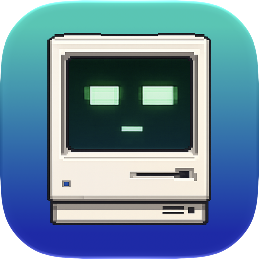
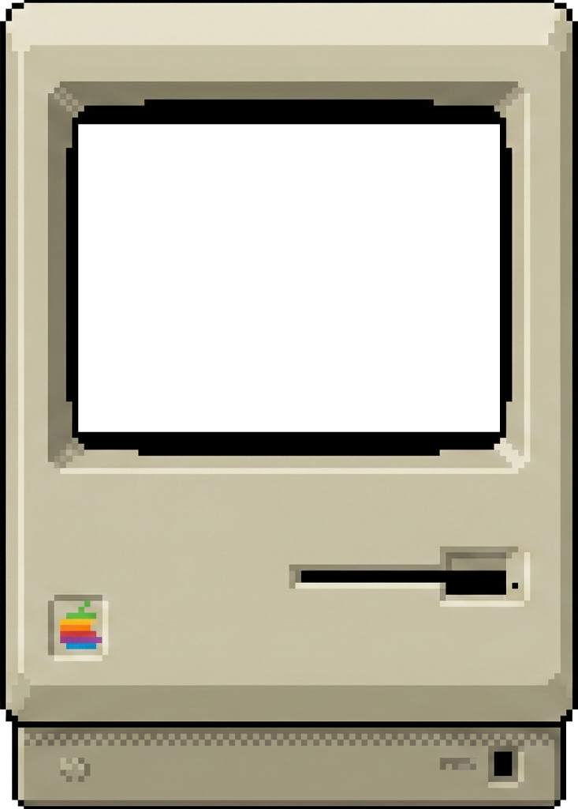
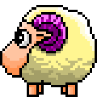

Wobbit notices.
It watches local activity from supported coding agents and gives each agent a small place on your desktop, with all of its sessions inside.

WobbitA companion for coding agents
Wobbit gives every coding agent its own tiny desktop companion. See who’s working, who’s waiting, and who needs you—at a glance.
Free · Local & private · macOS 15+
Standing by

The short version
Let your agents work in the background.
Wobbit tells you when to look up.
Two agents. One glance.
Give each coding agent its own Wobbit. Every companion gathers all of that agent’s sessions and mirrors what the agent is doing, so you can read the room even when the terminals are out of sight.
How it works
It watches local activity from supported coding agents and gives each agent a small place on your desktop, with all of its sessions inside.
When an agent codes, thinks, plans, rests, or waits, its expression and status change with it.
See who needs a reply before a permission prompt spends the afternoon quietly aging in a hidden terminal.
The useful bit
Wobbit makes waiting sessions visible without another notification avalanche. A glance tells you when one of an agent’s sessions has a question, needs permission, or has finished its run.
You don’t need to watch your agents work. You just need to know when they’re waiting on you.
Works with
Each supported agent gets its own companion, with all of that agent’s active sessions gathered inside.
Wobbit reads coding-agent activity on your Mac and processes it locally. It doesn’t access your accounts or upload your session data.
How it feels
You don’t check Wobbit the way you check a dashboard. You notice it the way you notice a desk clock—or someone pacing while they think.
Wobbit borrows from a time when computers felt like objects with personality: warm beige plastic, blinking cursors, and friendly faces that made an unfamiliar machine feel approachable.
It also owes something to desktop toys and screen mates—tiny sheep, pets, and odd little creatures that wandered around your desktop. Wobbit keeps that sense of presence, but gives it a modern job: making today’s coding agents visible at a glance.

Available now